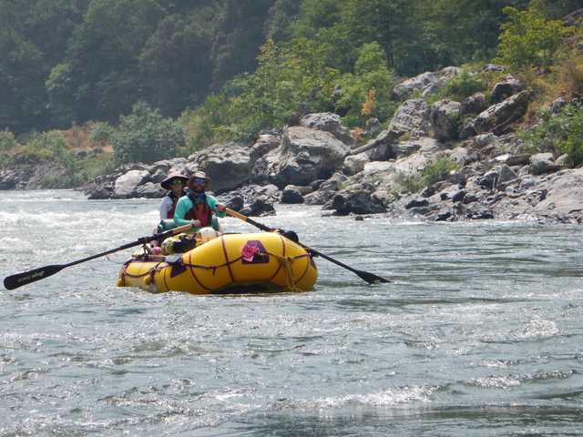
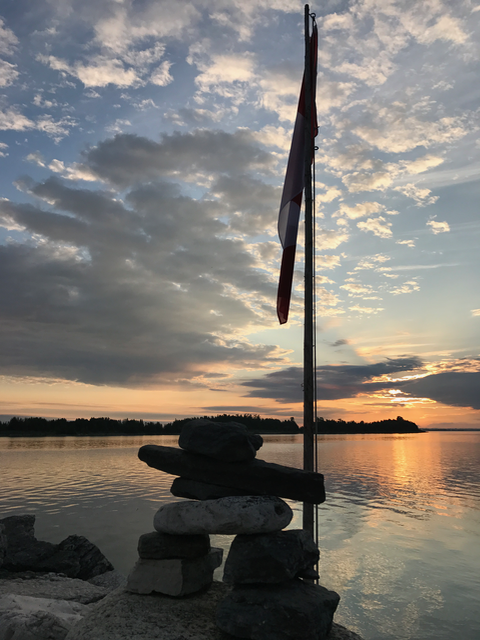
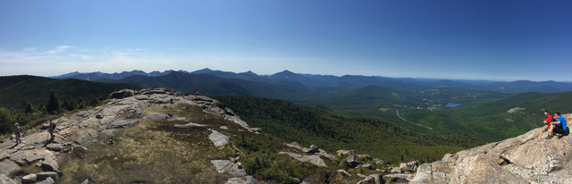
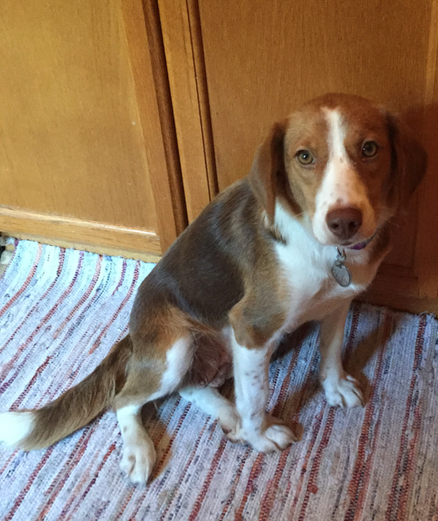
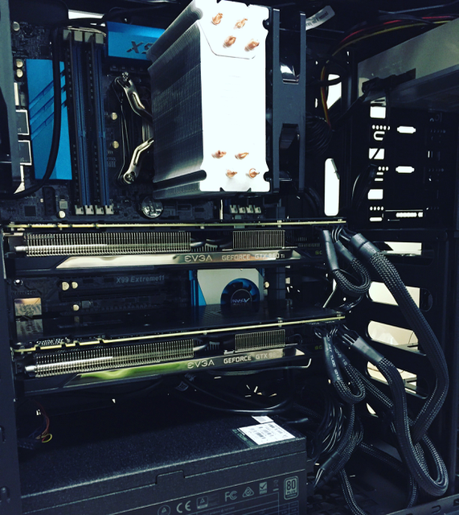
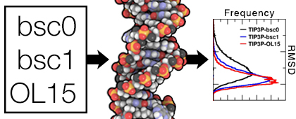
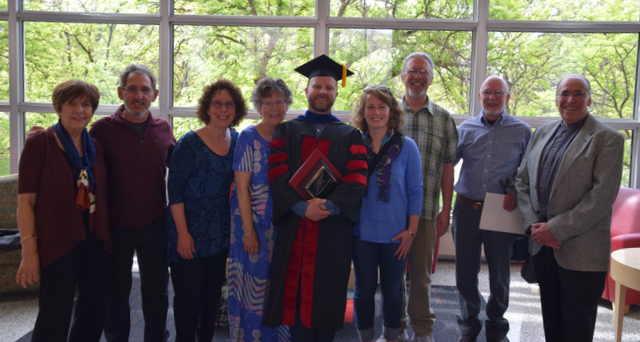
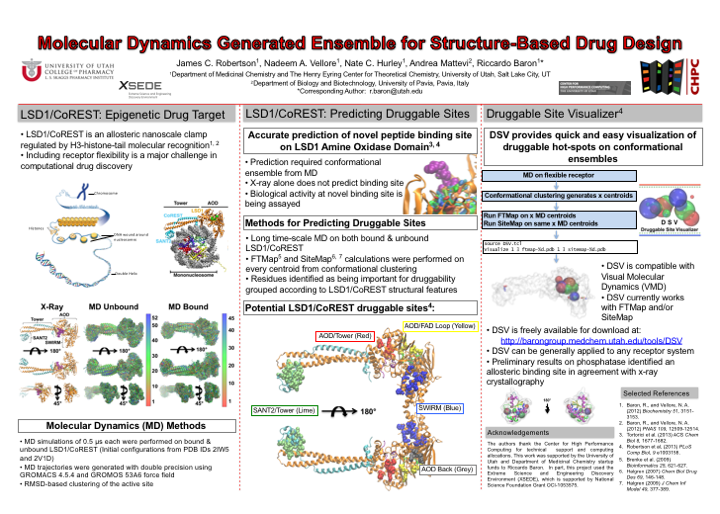
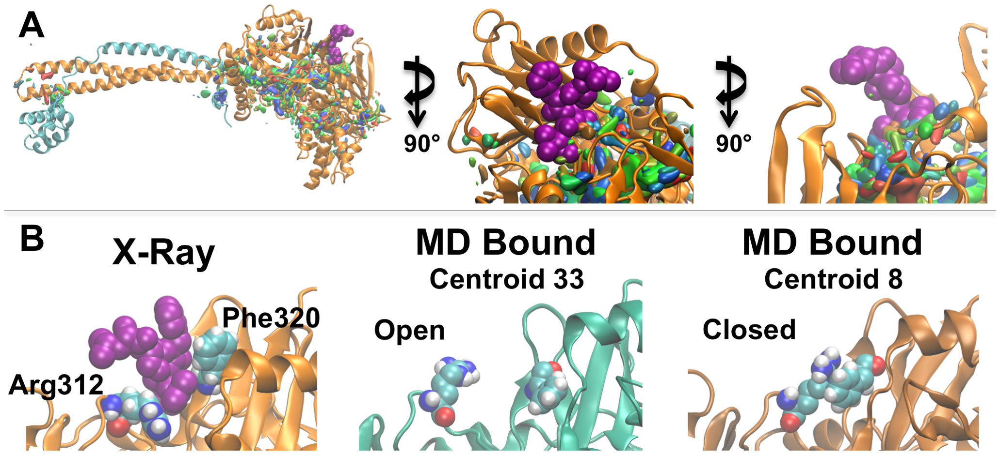
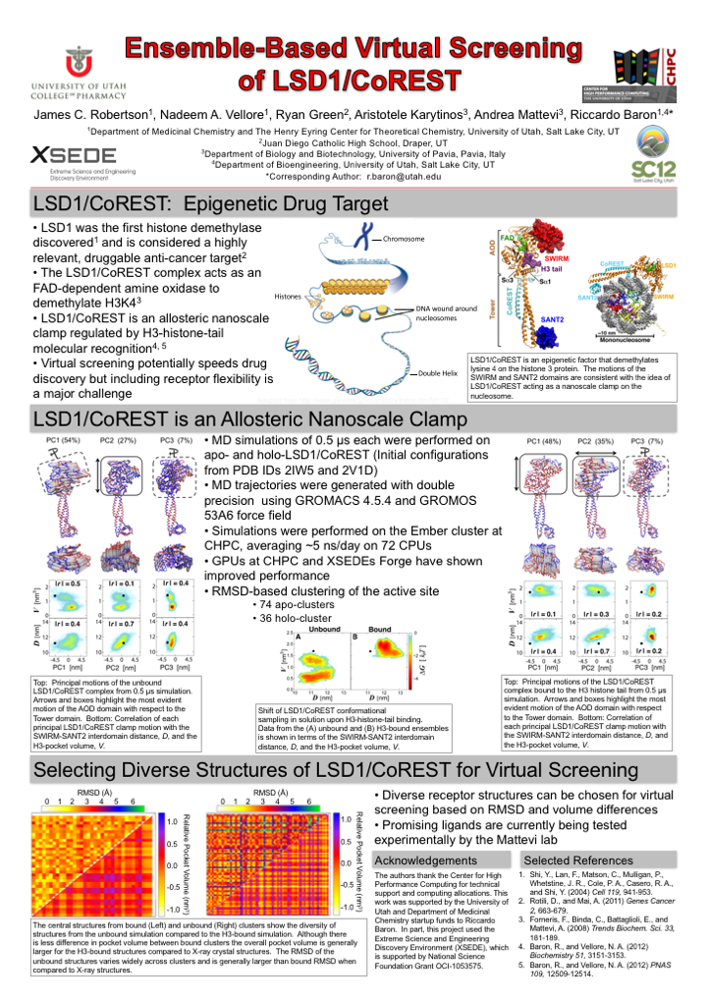

2018
ACS Spring Meeting in NOLA
ACS is a huge meeting, and it's
tough to see all the talks that look interesting, but I
listened some interesting talks, took in the COMP division
posters, wandered around the exposition, and toured the French
Quarter at night. Absolutely fell in love with New Orleans.
NIH K99/R00 Grant Writing Workshop
Pathway to Independence. Sounds
like the way to go, right? The NIH K99/R00 provide mentored
support for postdoctoral scholars and help the awardee
transition to independent research by providing 3 years of
funding once the postdoc starts their own lab. I left the
workshop feeling inspired to write a proposal and hopeful
that I could be successful if I followed some solid practical
advice.
Lab Manual Review Committee at Suffolk County Community
College
I will be working with faculty
and staff at SCCC this semester to review and revise the
laboratory manuals for their General Chemistry sequence.
This is a mentored experience through my IRACDA fellowship.
I'm looking forward to being part of this process and doing
what we can to improve curriculum.
Teaching General Chemistry at SUNY Old Westbury
I am instructor of record for
Principles of Chemistry II at SUNY Old Westbury for the
Spring 2018 semester. I have a class of 45 students and
can't wait to get classroom experience. This great
opportunity is possible through my IRACDA postdoctoral
fellowship.

2017
Guest Lecture for Physical and Quantitative Biology
I lectured on Protein Folding and
Stability for the Laufer Center's PQB graduate course.
Share Your Science Course Completed
Scientific American, The Alan Alda
Center for Communicating Science, and the Kavli Foundation
created a science communication course to train scientists
to engage with the public through writing blogs and other
informal writing. I was part of the first cohort to take the
course, and hope to share one or two of the pieces I worked
on during the course.
NSF XSEDE Startup Allocation Awarded
Postdocs can be PIs on XSEDE startup
allocations, so I wrote a proposal to use the XStream computer
at Stanford to run a deep learning algorithm for predicting
protein contacts from sequence. This is in collaboration with
Daniel Blibaum, an undergraduate in the Dill lab.
Vacation
Back in southern Oregon for a week to
visit family. Had a great time on a multi-day rafting trip on
the Wild and Scenic Section of the Rogue River.

Our new NCSA Blue Waters allocation "Protein Structure
Prediction" begins August 1st.
We have been awarded over 5M hours of
computer time on this NSF resource. Blue Waters is vital to our
research because it has thousands of GPUs, which we use to run
MELD, atomistic physics-based simulations of protein
folding.
"Scientists Teaching Science" course completed
I finished "Scientists Teaching
Science", an online course in best practices in science
education, based on the latest research on teaching and
learning. This course really helped me improve my Teaching
Statement, and I wrote a syllabus for a General Chemistry
course, just two of the benefits from this course.
Teaching at Suffolk County Community College Fall 2017
I'll be helping Dr. Candice Foley
with her CH 133 General Chemistry course this fall. This is an
opportunity to teach at an IRACDA partner institution. I look
forward to working with Dr. Foley to deliver great chemistry
lessons to students at SCCC.
O Canada!
Early in the year I learned that I am
a Canadian citizen due to recent changes in law (long story but
essentially I became eligible for citizenship since I have a
parent that was born in Canada), and I'm in the process of
applying for proof of citizenship from the Canadian government.
I was born in the US, but I'm looking forward to duel
citizenship! Every few years my extended family gathers on
Manitoulin Island and this year the reunion was on Canada Day
and Canada's 150th. Here's looking towards a rising sun over
the North Channel of Lake Huron.

Simons Summer Research Fellow in the Dill Lab
Jennifer Pan, a Simons Summer
Research Fellow, and high school student from Irvine, CA will
work in the lab for six weeks studying thermodynamics and
kinetics of protein G using MELD simulations.
Southampton Writing Workshops
The CIE at SBU sponsors an academic
writing retreat each year in Southampton, at Stony Brook's
campus on the east end of Long Island. I organized two
workshops: Style & Process and Writing Your
Manuscript, Dissertation, or Grant for the retreat. I
also took the opportunity to work on a couple of manuscripts
that I have in progress. We kicked off the retreat with a
cruise around Shinnecock Bay on an SBU research vessel.
IRACDA 2017 Conference in Birmingham, AL
This was a great conference in
Birmingham, where I attended a number of workshops, seminars,
and science talks. I met other IRACDA scholars from around the
country and presented a poster on my research into folding
nonthreadable proteins with MELD.

Alan Alda Center for Communicating Science Bootcamp
The CIE at SBU organized a full day
of Alda Center workshops including Improv for Scientists
and Distilling Your Message. This was a fun day of
learning how to communicate better as scientists.
CIE Alumni Career Panel
It was inspiring to hear what IRACDA
alumni are doing in their careers.
The Louis and Beatrice Laufer Center for Physical and
Quantitative Biology Annual Retreat
A full day of research talks,
networking, and spending time away from the computer in nearby
Old Field, NY.
Implicit Bias: An Obstacle to Achieving Diversity Webinar
I attended this webinar presented by
the National Postdoctoral Association to learn more about
solving the problem of under-representation, especially in
STEM.
2016
IRACDA Pedagogy Workshops
A great benefit of the IRACDA program
is that the CIE arranges a series of pedagogy workshops led by
experts from the Stony Brook community. The Fall 2016 - Winter
2017 workshops included the following:
- Philosophy of Scientific Teaching
- Evidence-based Instruction: Active Learning/Effective
Questioning
- Evidence-based Instructional Practices: Process
Oriented Guided Inquiry Learning
- Building a Fool-proof Syllabus
- Flipping the Classroom
- New Faculty Career Panel
- Microteaching Practicum
IRACDA scholars at SBU meet once a
month for a journal club focused on the latest in STEM
education. I presented on this paper from the Tanner group that
shows that the affective domain is key in learning (in addition
to cognitive and metacognitive) and concludes that monitoring
affective experiences is important but new and improved
assessment tools are needed.
Teaching Assistant for Physical and Quantitative Biology at
SBU
I worked with Ken Dill and Gabor
Balazsi for half of a semester to develop and grade homework,
exams, and recitation problems for this graduate level course.
I also led weekly recitations, and gave three lessons on
proteins and protein folding.
Adirondacks
I took a nice trip to the Adirondacks
with my wife and dog for the Labor Day holiday. We camped near
Saranac Lake and had a great time hiking and exploring the
'Daks! This was a wonderful trip, I was really missing the
mountains after living in Oregon and Utah for many years.

Adopted Frankie
Frankie, a beagle mix we adopted from
North Shore Animal League joined our family. I love this
dog.

New Lab, New Computer
Very excited to build a new desktop
for work I'll be doing in the Dill lab. Hopefully this box will
fold some proteins! Thanks to Kenneth from the Simmerling Lab
for helping with the build.

Moving to Long Island
It's hard to leave SLC, the
mountains, our friends, and the life we had in Utah, but it's
exciting to be heading east to Long Island.
Rodrigo Galindo and I were co-first
authors on this study of DNA force fields, assessed over 14ms
of molecular dynamics trajectories.

University of Utah College of Pharmacy Convocation
Congrats to the CoP graduates, PharmD
and PhDs! I donned my academic costume and collected my
parchment (or at least a note saying that my degree is in the
mail). It was a great honor to receive the Wolf Prize and
deliver a short commencement speech on behalf of the graduating
PhDs. I was fortunate to be joined by family for a hard-earned
celebration. Here I am with family and Hal and Joan Wolf.

Awarded the $5000 Wolf Prize
I was awarded the University of Utah
College of Pharmacy Wolf
Prize
Doctoral defense
I passed my oral defense and will
submit my dissertation to the graduate school.
IRACDA NY-CAPS Postdoctoral Fellowship at Stony Brook
University
I'm very excited to doing a postdoc
as part of the Stony
Brook University IRACDA program in Ken Dill's group.
This is an incredible opportunity to do cutting edge research in
protein biophysics and gain classroom teaching experience.
ACS Spring Meeting 2016 in San Diego, CA
I presented a poster Assessing the
Current State of AMBER Force Field Modifications for DNA,
gave a talk BI/BII Backbone Sub State Dynamics in Protein-bound
DNA, and learned about lots of interesting research.
2015
Rocky Mountain Advanced Computing Consortium, Boulder, CO
I volunteered to help with
registration and attended workshops and talks.
We demonstrate convergence of BI/BII
distributions in free- and E2 protein-bound DNA using
microseconds of molecular dynamics simulations.
A Big Moment in My Life
I took a short break from research to
get married in Alta, UT. My wife and I then backpacked through
the Wind River Range in Wyoming for our honeymoon.
I Joined the University of Utah College of Pharmacy Student
Advisory Committee for Retention, Promotion, and Tenure
2014
Guest Lecturer, Organic Medicinal Chemistry
International Society for Quantum Biology and Pharmacology
Meeting, Telluride, CO
Beautiful venue for this interesting
meeting, attended with all of the Cheatham group.
Bryce Canyon 50k
I camped near Bryce Canyon National
Park and then raced in the 50k. The course traversed beautiful
scenery in southern Utah.
Move to Cheatham Lab
Riccardo Baron left his position at
Utah to move to New York and I was fortunate to be able to move
into Tom Cheatham's lab.
Biophysical Society Meeting, San Francisco, CA
I had a great time at my first
Biophysical meeting in SF included watching the Chinese New
Year Parade. The meeting was also an opportunity to present my
poster on ensemble-based virtual screening and the tool we
developed in the Baron Lab, Druggable Site Visualizer.

Teaching Assistant for Physiological Chemistry II
I TA'd for this graduate level course
for PharmD students. I had typical TA responsibilities like
grading, but I also presented a few lessons on transcription,
translation, and DNA replication.
2013
We identified a new binding site on
LSD1 through ensemble-based virtual screening, and confirmed by
X-ray crystallography. The ensembles were generated by
molecular dynamics simulations, and we showed that the static
X-ray structure was not enough to predict the binding site, but
that structures from the MD ensemble sampled conformations
compatible with the ligand. We also identified other potential
binding hot spots.

AAAS Meeting in Las Vegas, NV
I gave a talk on Ensemble-based
Virtual Screening of LSD1, and was terrified the entire
time because I was the only graduate student, all others were
advanced postdocs or professors. The audience was great and it was
a nice meeting. Thanks to AAAS for funding through the Student
Travel Grant.
50k Run
I completed my first 50k trail run,
the Antelope Island 50k, that essentially circumnavigates, yes,
Antelope Island, which sits in the Great Salt Lake. Incredible
scenery but lots of suffering.
2012
Poster and Talk at SC12
The supercomputing conference was in
SLC so I volunteered and presented a poster. I also presented a
3 minute talk, which was... interesting. Volunteering was great
fun and overall the conference was better than I expected, I
look forward to another SC.

First Marathon
I ran my first marathon, the
Escalante Canyons Marathon, from Boulder to Escalante, UT,
along one of America's great roads. Scenery was amazing,
weather was perfect, and I finished! Barely, but I
finished.
Utah Bioscience Symposium Poster Presentation
Join Riccardo Baron's Lab
After some great rotations I decided
to join Ric's lab to pursue computational drug design and
discovery, primarily focused on LSD1, a histone
demethylase.
This was part of a collaboration with
the Cheatham and Lim labs that I worked on (I had a very small
role) during my first rotation with Tom Cheatham.
Research Rotations Continued...
I'll work with Chris Ireland and
Riccardo Baron this spring.
2011
Research Rotations at Utah
I'll be working with Tom Cheatham,
Jon Rainier, and Matt Sigman for 3 of my 5 rotations.
Graduation!
I graduated cum laude with a B.S. in
Chemistry and an ACS Certificate in Biochemistry. I also won two
awards from the Chemistry Department: Outstanding Service Award,
and Award in Inorganic Chemistry.
Heading to Utah for Graduate School
I learned I was accepted into the
Biological Chemistry graduate program at the University of Utah
in Salt Lake City. Looking forward to research and playing in
the Wasatch!
ACS Spring Meeting, Anaheim, CA
I attended the ACS thanks to funding
from SOU and the NSF REU Chemistry Group Leadership Award, and
presented a poster on my REU research.
2010
Senior Research at SOU
Natural products research with Hala
Schepmann at SOU, studying bioactive isolates from Mahonia
aquifolium, the Oregon grape.
NSF REU at Coe College
I worked with Maria Dean to study how
two marine worms manufacture proteinaceous biocement, an
adhesive the worms use to build shelter and that has many
potential biomedical applications.
Coyner Graf Scholarship
I learned that I would be the first
recipient of the Coyner Graf Scholarship. The award was
established in memory of Coyner Graf and supports an SOU
Chemistry senior with full tuition.
2009
Organic Chemistry Student Mentor
I led weekly workshops with small
groups of students taking Organic Chemistry.
2008
Western Mycorrhiza Gathering, Flagstaff, AZ
We traveled to Flagstaff to join
other mycorrhizae researchers to discuss the latest
science.
First Research Experience
I transformed from a student
interested in science to a student doing science.
I began working in Darlene Southworth's lab at SOU to help
study biocomplexity of mycorrhizae associated with Quercus
garryana in southern Oregon oak savannah.